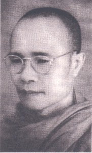

BuddhaSasana
Home Page
This document is written in Vietnamese, with Unicode
Times font
|
 Hòa Thượng Bửu Chơn thế danh là Phạm Văn Thông, sinh năm Tân Hợi (1911) tại Sa Ðéc, Ðồng Tháp. Thuở thiếu thời Ngài sinh sống tại đất nước Chùa Tháp Campuchia, do đó Ngài thấm nhuần Phật Giáo Nam Tông, vốn là quốc giáo của Vương quốc này. Sẵn có túc duyên Phật pháp nên vào năm 1940, Ngài xuất gia thuộc hệ phái Nam Tông. Sau đó Ngài vào rừng chấp trì hạnh đầu đà (Dhutanga) suốt mười hai năm. Năm 1951, Ngài được Phật tử Việt Nam cung thỉnh về Sài Gòn để truyền bá giáo pháp Nguyên Thủy. Năm 1952, Ngài có duyên lành sang Tích Lan để nghiên cứu Phật học tại trường Dhammaducla Viddhyàlaya trong thời gian hai năm. Ngài cũng đã hành hương sang Ấn Ðộ để chiêm bái các thánh tích và cung thỉnh Ngọc Xá Lợi do Giáo Hội Phật Giáo ở Tích Lan tặng đem về Việt Nam. Năm 1954, Ngài dẫn đầu phái đoàn Phật Giáo Việt Nam tham dự Hội nghị Kết Tập Tam Tạng Pàli lần thứ 6 tại Rangoon, Miến Ðiện. Ngài là vị Giáo phẩm Phật giáo Việt Nam đã tham gia nhiều hoạt động Phật sự quốc tế. Vào năm 1956, Ngài tham dự Hội nghị Phật giáo Thế giới lần thứ 3 tại Miến Ðiện. Và nhân dịp này Bộ Lễ Miến Ðiện đã trao tặng Ngọc Xá Lợi cho Ngài mang về Việt Nam tôn thờ. Ngài là thành viên vận động thành lập Giáo Hội Tăng Già Nguyên Thủy Việt Nam. Nhiệm kỳ lâm thời Ngài được cử làm Tăng Thống Ban Chưởng Quản vào năm 1957. Trong năm này Ngài dẫn đầu phái đoàn dự lễ kỷ niệm 2.500 năm Phật Giáo tại Campuchia. Ngài dự Hội nghị Phật giáo lần thứ 4 tại Népal và Hội nghị Triết học tại Ấn Ðộ. Năm 1958, Ngài dự Hội nghị Quốc tế về lịch sử Tôn Giáo Thế Giới lần thứ 9 tại Ðông Kinh, Nhật Bản. Năm 1960 Ngài được bầu làm Phó Chủ Tịch Hội Phật Giáo Thế Giới trong kỳ Ðại Hội lần thứ 5 tại Thái Lan và tham dự Hội nghị Lịch Sử Tôn Giáo Thế Giới lần thứ 10 tại Tây Ðức. Ngài cũng đến các nước Tây Phương: Anh, Ý, Pháp để nghiên cứu các tổ chức Phật Giáo tại các nơi này. Năm 1961 tại Hội nghị Phật giáo Thế giới lần thứ 6 tại Phnôm Pênh, Campuchia, Ngài được bầu vào chức vụ Cố vấn tinh thần tối cao và vĩnh viễn cho Hội Phật giáo Thế giới. Năm 1962, Ngài đắc cử Tăng Thống Giáo Hội Già Nguyên Thủy Việt Nam. Ngài đã cùng với Hòa thượng Narada (người Tích Lan) vận động xây dựng thắng tích Thích Ca Phật Ðài tại núi Lớn ở Vũng Tàu. Năm 1963, Ngài giữ chức Phó Chủ Tịch Ủy ban Liên phái Bảo Vệ Phật Giáo chống chế độ nhà Ngô kỳ thị Phật Giáo. Năm 1964, Ngài dẫn đầu phái tham dự Hội nghị Phật Giáo Thế Giới lần thứ 7 tại Ấn Ðộ. Năm 1965 tại Tân Gia Ba, Ngài được bầu làm Chủ Tịch Hội Phật Giáo Thế Giới địa phương và tham dự Hội nghị thành lập Hội Tăng Già Thế Giới tại Tích Lan. Năm 1966, Ngài dẫn đầu phái đoàn tham dự Hội nghị Phật Giáo Thế Giới lần thứ 8 tại Thái Lan. Năm 1968 Ngài tham dự Hội nghị Lịch Sử Tôn Giáo Thế Giới thứ 12 tại Jerusalem Do Thái. Năm1972 Ngài đảm nhiệm chức vụ Phó Tăng Thống Giáo Hội Tăng Già Nguyên Thủy Việt Nam. Năm 1979, Ngài đảm nhận chức vụ Cố vấn Ban Chưởng Quản Giáo Hội Tăng Già Nguyên Thủy Việt Nam khóa II. Ngài là một học giả, biết rất nhiều ngoại ngữ như Lào, Thái Lan, Khmer, Miến Ðiện, Tích Lan, Trung Quốc, Pháp, Anh, Ðức, Ý, Nga và Cổ ngữ Pàli. Riêng về Pàli là ngôn ngữ mà Ngài đã dành rất nhiều thì giờ nghiên cứu và đã soạn thành tự điển Pàli. Dù bận rộn Phật sự trong nước cũng như Phật sự quốc tế, Ngài vẫn dành thời gian để phiên dịch và trước tác nhiều kinh sách để hoằng dương giáo pháp, trên dưới 20 tác phẩm. Ngày 17-9-1979, mặc dù sức khỏe suy kém, Ngài vẫn dẫn đầu phái đoàn Phật Giáo Việt Nam sang thăm hữu nghị, tham dự lễ Dol-ta (lễ lớn của dân tộc Campuchia) tại Campuchia, và đặc biệt là tổ chức lễ truyền giới Tỳ Kheo cho các nhà sư Campuchia. Ngày 19-9-1979 bệnh cũ bộc phát trầm trọng, đến 2 giờ sáng ngày 21-9-1979 (1 tháng 8, Kỷ Mùi), Ngài an nhiên viên tịch tại Phnôm Pênh, hưởng thọ 69 tuổi đời, với 30 tuổi đạo. Trước giờ phút lâm chung, trên giường bệnh Hòa thượng vẫn còn tỉnh táo nghe các thành viên trong đoàn báo cáo buổi lễ Dôn-Ta và lễ Truyền giới viên mãn cho 7 vị sư Campuchia, mở đầu kỷ nguyên phục hồi nền Phật Giáo xứ Chùa Tháp. Ngài là một tấm gương sáng về phương diện hoằng pháp lợi sanh. Công hạnh Ngài còn tỏa rộng ra thế giới, và còn lưu lại trong mỗi bước hành trì giới pháp độ sanh của những người có lòng vị tha và chí tìm cầu giải thoát. Các tác phẩm của Ngài còn để lại trong sự nghiệp sáng tác phiên dịch :
Trích: "Danh Tăng Việt Nam", Tập I, Thích Ðồng Bổn Chủ biên, Thành Hội Phật Giáo xuất bản, Sài Gòn, 1997. -ooOoo- |
last updated: 02-02-2004